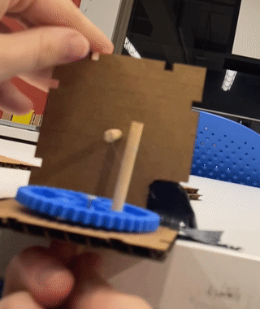
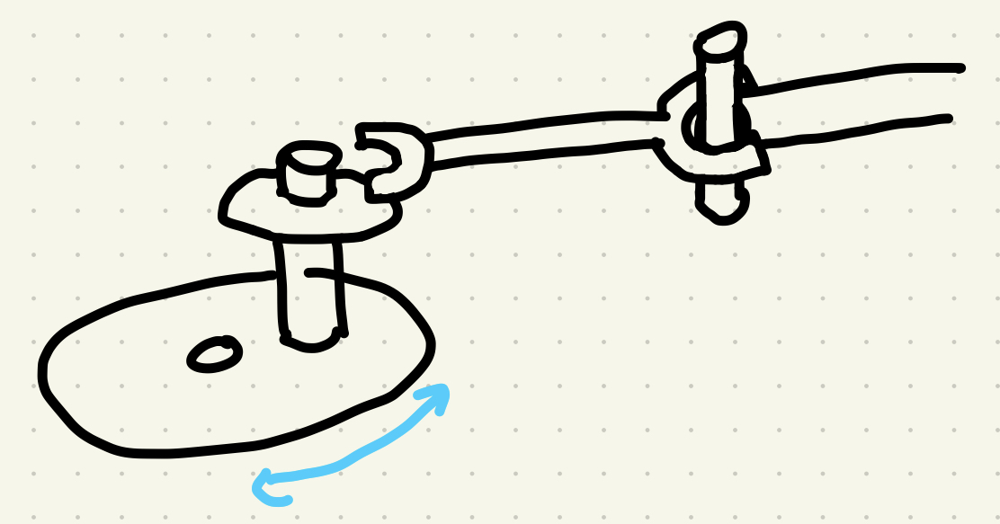
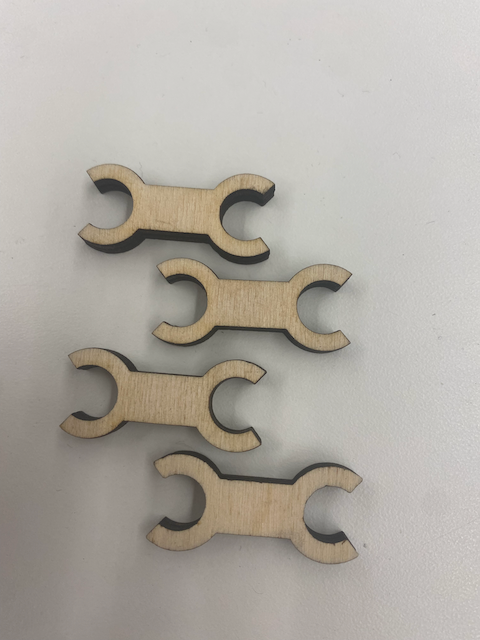
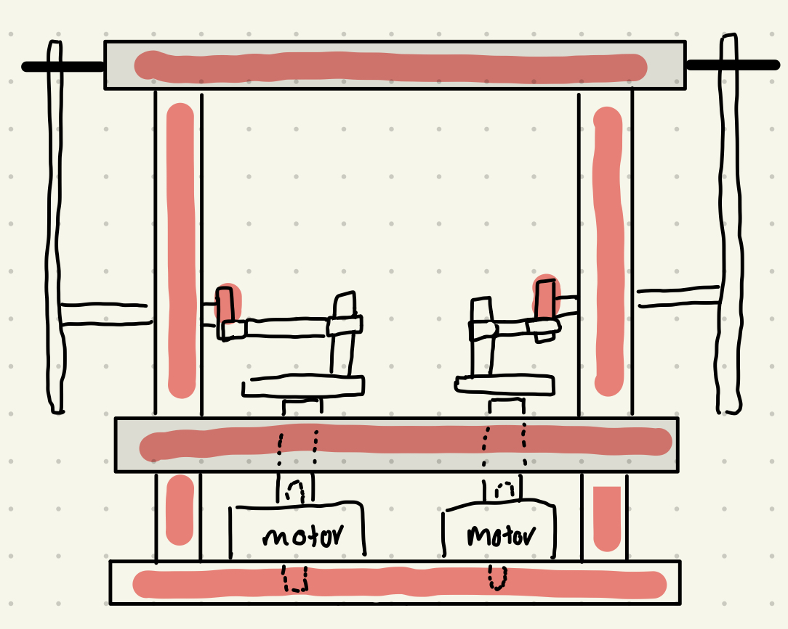
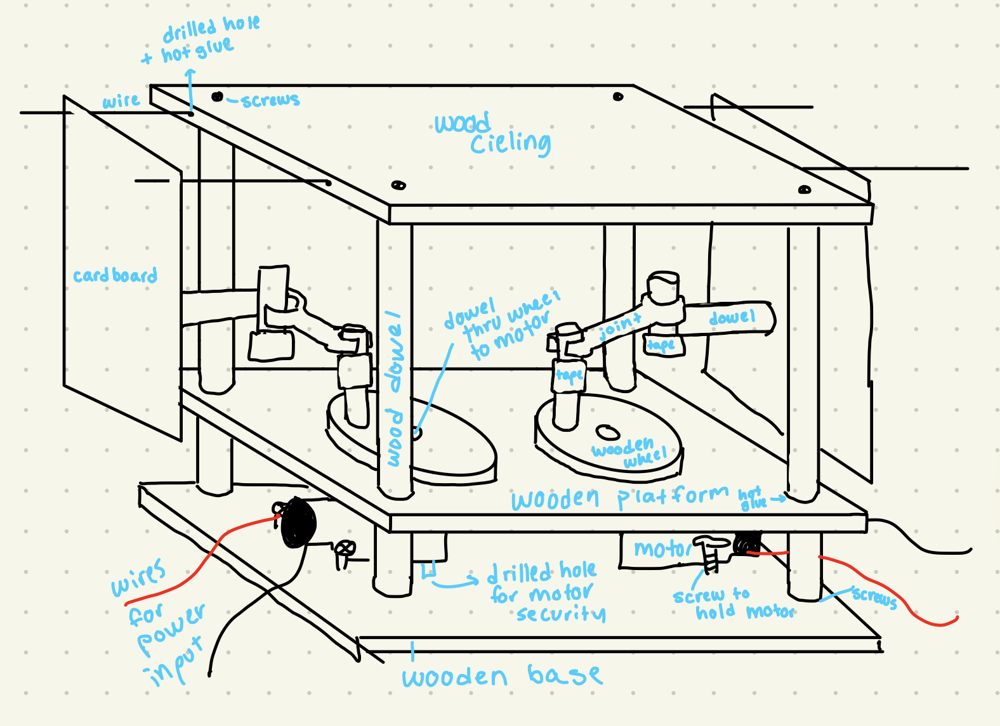
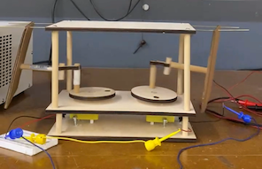

<br>
# WEEK 3: Hand Tools and Fabrication
#### Ideation
This week, we were tasked with building a kinetic sculpture that could be powered by a motor and controlled by a simple circuit. Since one of my final project ideas is to make a robotic pufferfish, I decided I wanted to make a sculpture that would expand and contract in some form. At first, the only mechanism I could think of was something like a <a href="https://en.wikipedia.org/wiki/Hoberman_sphere">Hoberman sphere.</a> I quickly realized two things: the components to such a complicated structure would probably be best if they were made out of plastic (aka 3D printed), and in any case it would be a lot of moving parts to perfect in the 3 days we have to work on our projects after our Friday classes. I tried to simplify to a dodecahedron, with the idea that the faces would push out and away from each other and then return to a unified shape. After speaking with one of our TFs, Chris, at office hours, I realized that this too would be pretty complicated both geometrically and would probably require multiple motors. Chris helped me ideate a much more realistic project: a box, where only the vertical walls move in and out. While I would have loved to figure out a more complex system, I was still excited to figure out how to make a breathing box.

####My plan
Largely inspired by Chris, who suggested a system with posts attached to strings that would pull the walls in, I decided to turn a circular motion into a 1 dimensional movement. I needed the walls to be both pushed and pulled, and to limit any movement in any other dimensions. I decided to make a mock-up with cardboard, chopsticks, and a plastic gear I found in the shop. I realized that string would pull the walls back, but not push them, as shown in the gif below. I decided to replace the string with a rigid joint connecting the wheel to the wall post. I needed the joint to be able to spin, but not a full 360 degrees, otherwise it would get stuck if it twisted too far. It couldn't be fully rigid, either, or else the wall would follow the circular path of the spinning wheel and not the desired linear path. Using the cardboard mockup and a series of drawings, I figured out a mechanism that I believed would work well enough.
  
####Building
Luckily the build process was not painful and I did not run into too many hiccups because I had done enough planning. I have predetermined (somewhat arbitrarily) the dimensions and materials for everything before any cutting or building occured. The scale was based on the sturdy wooden dowels I wanted to use. I had learned after my attempted car from week 2 that cardboard was not the best material for smooth movement, so I made most of my components out of wood. I also recall Ibraham reminding us that while hot glue is great for prototyping, it doesn't look nice in a final project, so I wanted to get some practice with screws. I also wanted to make the structure sturdy enough in case I wanted to build off of it for future weeks' projects, and was worried that cardboard might grow weak with wear and tear. The one component I didn't finalize the dimensions of were the joints. I hadn't done the geometry to figure out the angles that the joints should move across until post production, but that was an easy fix by sanding down the dowels they were attached to.
  
####Motion
The motion didn't exactly happen as I had hoped it would. Since I used two different motors for the opposite walls, I had a hard time syncing up the movement so that it looked like the walls were "breathing" together. It almost looks like one motor is moving faster than the other, which doesn't make complete sense to me since they had the same input on the breadboard. I'm wondering if the physical connection of one motor is weaker than the other and slips slightly. In any case, if I were to fix or replicate this project, I would probably use gears so that I would only rely on one motor and I could be confident that everything was in sync. I avoided gears this time because I wanted to focus on the joints and nail the motion. I would also include the same wires that were on the ceiling on the base platform to keep the carboard moving more smoothly. You can still see some influence from the circular motion of the wheels. Another deviation from my plan is that I only had 2 moving walls instead of 4. This was part due to time constraints, but also because I didn't wantt o waste more materials to make more of the same type of movement. If I were to add the two moving walls, I would attach the motors to the wooden ceiling just as I had to the base so the wheels wouldn't interfere with one another.
Since I didn't use a potentiomer, the only voltage drop I could read was after the motor turned the gears. Using the voltmeter, the voltage going into the motor was ____ and the voltage leaving was ___. Using Ohm's law, V=IR, the current was ___ going through the system. (I need to go remeasure the values)
<video width="500" height="auto" controls>
<source src="./kinetic sculpture.mov" type="video/mp4">
</video>